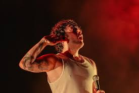
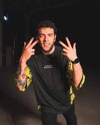
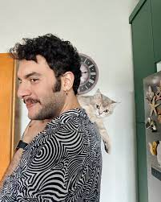

Uğurhan Özay 8 Temmuz 1993 tarihinde İstanbul'da dünyaya gelmiştir. Müziğe ilgi duymaya lise yıllarında başlayan Özay, İstanbul Okan Üniversitesi'nde Gastronomi bölümünü bitirmiştir. Mehmet Uğurhan Özay, Türk rock müziğinin önde gelen isimlerinden biri olan "Dolu Kadehi Ters Tut" grubunun karizmatik vokalistidir. 1980 tarihinde Çanakkale'de dünyaya gelen Mehmet, müzikle tanışmasıyla birlikte yaşamının büyük bir kısmını bu tutkuya adamıştır. Müzik kariyerine genç yaşlarda başlayan Mehmet, özellikle rock müziğin etkisinde kalmış ve bu alanda kendini geliştirmiştir. Güçlü ve duygusal sesiyle dikkat çeken Mehmet, sahne enerjisi ve performansıyla hayranlık uyandırmıştır. Profesyonel müzik kariyerine "Dolu Kadehi Ters Tut" grubuyla adım atan Mehmet, grupla birlikte birçok başarılı albüm ve single çalışmasına imza atmıştır. Grubunun başarısında önemli bir rol oynayan Mehmet, güçlü vokaliyle ve etkileyici sahne performansıyla dinleyicilerin beğenisini kazanmıştır. Mehmet Uğurhan Özay, sahne performanslarıyla ve müzikal yeteneğiyle müzik dünyasında önemli bir iz bırakmıştır. Dinamik ve etkileyici sahne şovlarıyla tanınan Mehmet, aynı zamanda şarkı sözü yazarlığı ve beste yapma konularında da yetenekli bir sanatçıdır. Şu anda Mehmet, "Dolu Kadehi Ters Tut" grubuyla birlikte müzik kariyerine devam etmekte ve hayranlarına unutulmaz müzik deneyimleri sunmaya devam etmektedir.
  